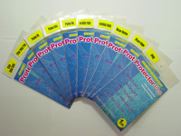

| Brando Workshop screen protector
After buying my new Handera 330, I was a bit concerned about scratching it's lovely high-res screen, so I started looking for some protection. I saw some people mention the Brando Screen protector in a forum somewhere and so I took a look. They're shipped out of Hong Kong, and I got my first one in about a week. I was really pleased with it, except for the fact that I damaged the protector whilst applying. TIP: if you've got fluff/dust on your Brando protector, use scotch tape to remove it. I emailed Brando to order another one for Rich's Visor, and they kindly sent me a replacement for the Handera one free of charge. What a nice company. They make these protectors in many different sizes, for many different PDAs. It's really easy to apply, and cuts down the glare off the screen really well too. All in all, a very good buy for $12 |
 Related Links:
|
|
Back to index page |